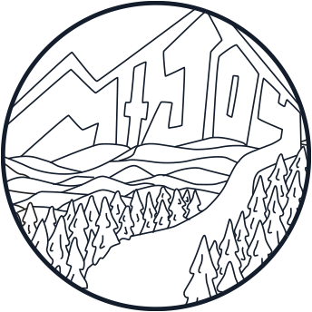

MT. JOY
HOT SAUCE
Mt. Joy Hot Sauce was an imagined brand inspired by one
of my favorite bands from my hometown in Pennsylvania. The brand contains
three separate labels for different flavors of sauce including an original
“Astrovan Hot Sauce”, an homage to the band’s first ever released song titled
“Astrovan”. The name Mt. Joy comes from a mountain in a park in the area,
Valley Forge National Park. I chose to design the labels for the hot sauce
bottles in a whimsical style that mirrored that of the band's own album covers.
Each label and name comes from an individual song title and the designs are
spun off of the imagery in the names. These labels allowed me to explore a
more fun illustrative style and to utilize Adobe Illustrator in creating
complex vector drawings. I really connected to this project as it was inspired
by things that are meaningful to me, not only one of my favorite bands but
also a place that holds a lot of importance to me, the national park.